Design phase · storyboard v7 · revised from your notes on v6
One line runs through the world: the blood moon → the far shore and its pines → the lake → him, on his stone, facing the moon → the lantern path → the house. The film opens quietly, close on him with the moon behind the camera. It circles him through the draw, follows the path to the house, and only at the end turns around: behind him, across the water, the pines and the blood moon.
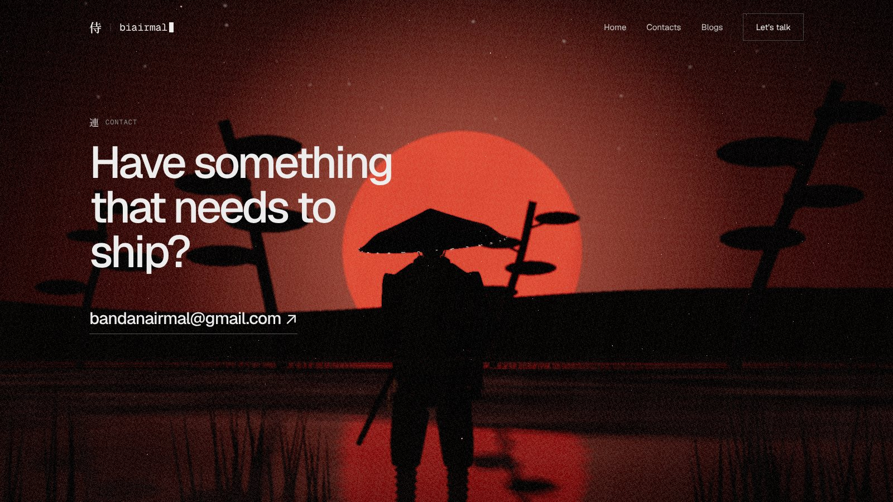
Shot 06 · the climax · real-time previz render · placeholder geometry
改Your notes → what changed
| You said | v7 |
|---|---|
| Moon in front of the samurai | The order is moon → him → house, with him in the middle on his stone, facing the moon. The lantern path runs behind him to the house on the near shore. |
| Hero not too flashy | A close-up of him, his hand on the hilt and the scabbard seal just broken: the moment before the draw. The moon is behind the camera, so there’s no red disc and little glow. Low key, warm lantern light behind him. |
| Circle him; see the slash | Scrolling circles the camera from his front-left to his front-right as he draws. The cut leaves a ribbon of light that follows the real path of the blade from the animation, from his left hip to above his right shoulder. |
| Then along the path to the house | The camera glides past him onto the lantern path (Approach) and arrives at the house: the cut targets in the yard (Work), the weapons on the veranda (Toolkit). |
| Blood moon at Contact, as the climax | The first time the moon appears. The camera flies back down the path and stops behind him. His back, the water, the line of pines across the lake, and the blood moon filling the sky. |
地The world
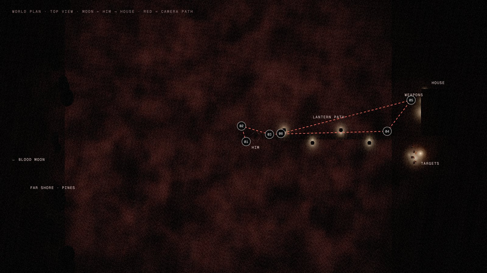
For the first five shots the camera faces away from the moon, toward the house. It turns around for the last one, so the moon works as a reveal.
絵Shots
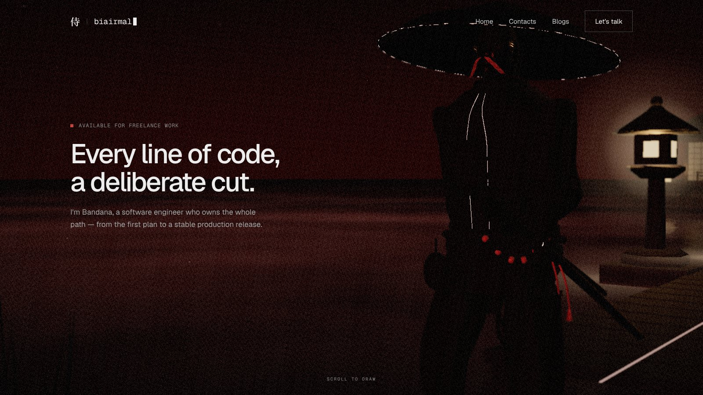
Close on him from the front, his right hand on the hilt and his left thumb breaking the seal. Behind him the lantern path and the house glow warm and soft. The moon is behind the camera: no disc, just a faint red cast on his front.
Almost none. He breathes, the cloth stirs, the mist drifts. The camera drifts a few centimetres with the pointer.
The first scroll starts the circle, and the draw begins. Nothing happens until you ask for it.
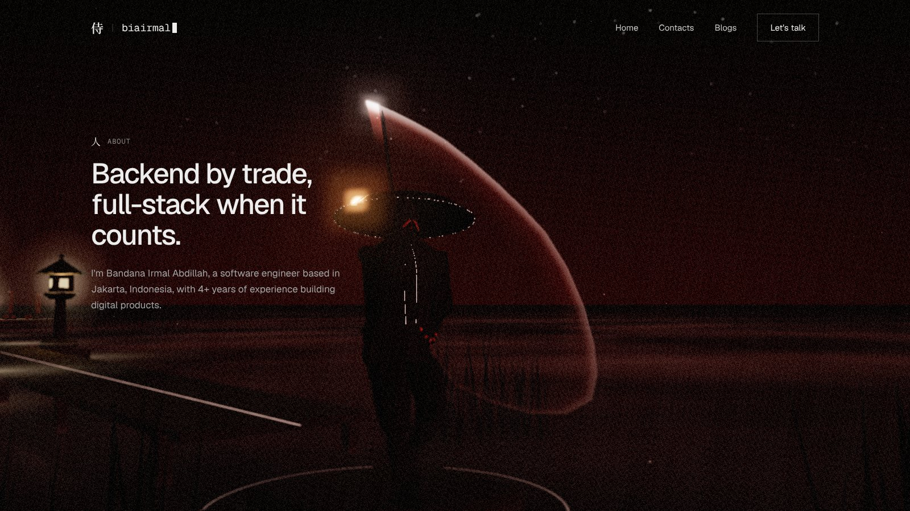
The camera circles him while your scroll scrubs the draw. At the cut, the blade leaves a crescent of light along its true path, and time slows. The trail fades from its tail as he holds the finish.
The ribbon is swept by the sword bone in the animation, so it always matches the motion. Red at the edges, white at the edge of the blade. It is additive, so it costs almost nothing.
The About copy sits beside the person it describes, at his defining moment.
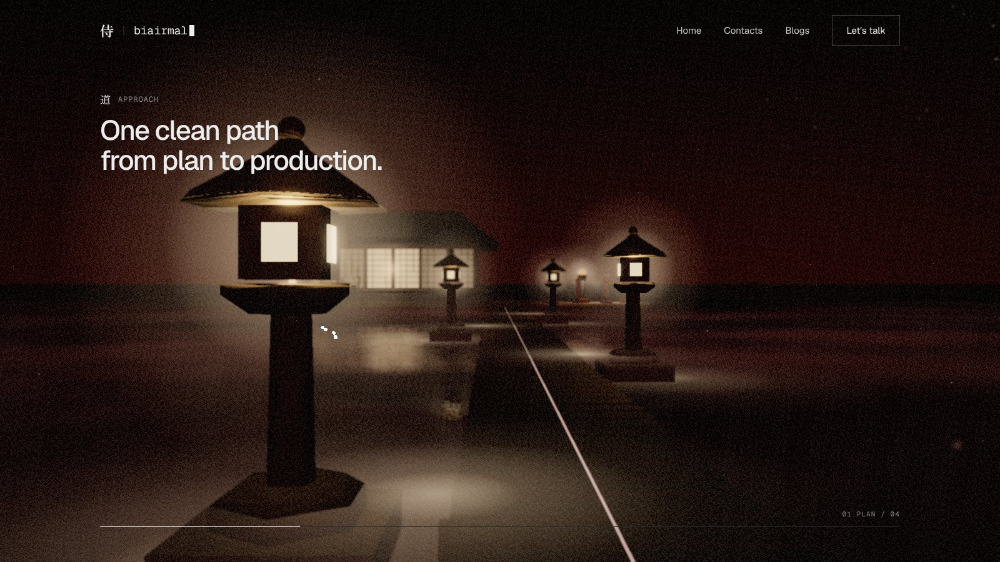
The four lanterns are Plan, Build, Ship, Sustain. The path pins and the camera walks it, and each lantern’s card rises as it passes.
The near lantern sweeps past the lens while the house slowly grows.
All lanterns are lit from the start: glowing material, glow sprite and light pools.
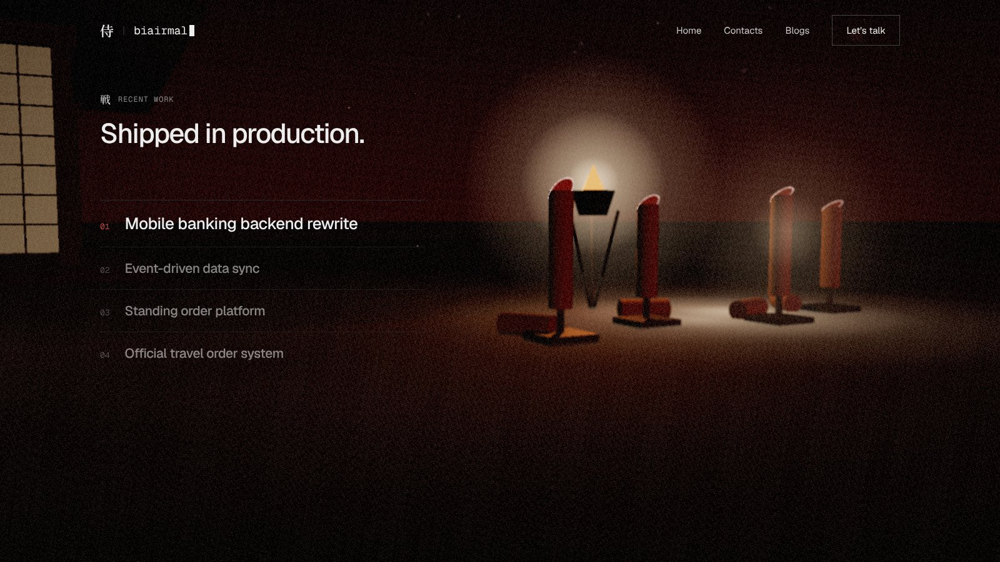
Four straw targets, each cut clean through in one stroke: one per shipped project. These are the cuts from his practice, next to his house.
Opening a project row brings its target forward, and the cut face glows briefly.
The fire basket lights the yard and explains where the light comes from.
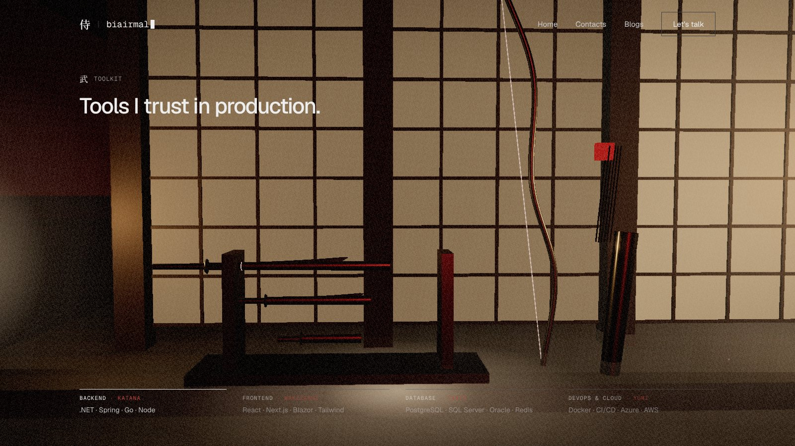
Katana = Backend, wakizashi = Frontend, tantō = Database, yumi = DevOps & cloud.
The weapon in view lifts slightly and the katana slides a hand’s width out of its scabbard.
Black lacquer against glowing paper: pure silhouettes, easy to read on a phone.
The camera flies back along the path and settles behind him, then turns toward the moon. His silhouette, the water, the black pines across the lake and the blood moon, seen for the first time and filling the frame.
The scene shifts from warm lantern-light to red. The moon’s reflection runs across the water toward him.
Hovering the email brightens every lantern on the path behind you. “Back to top” circles back to the opening close-up.
携On phones
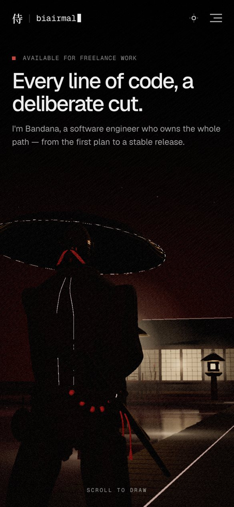
01 Hero
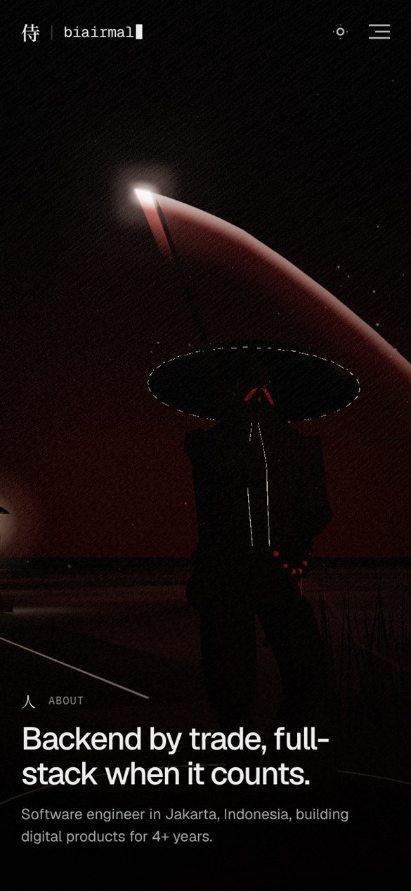
02 About
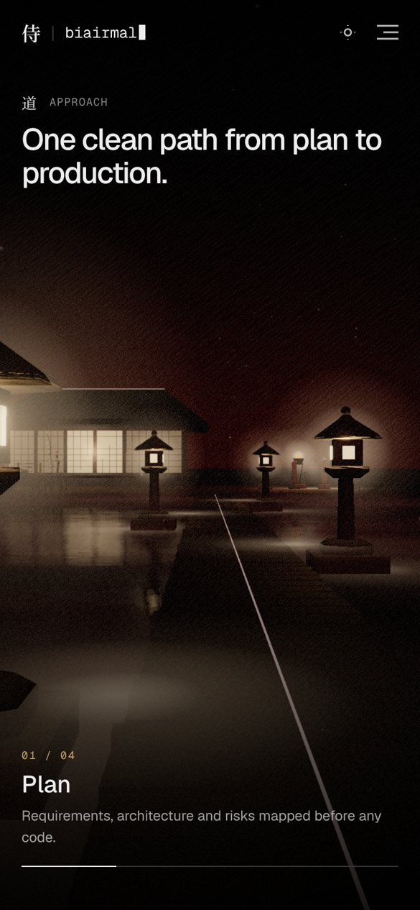
03 Approach
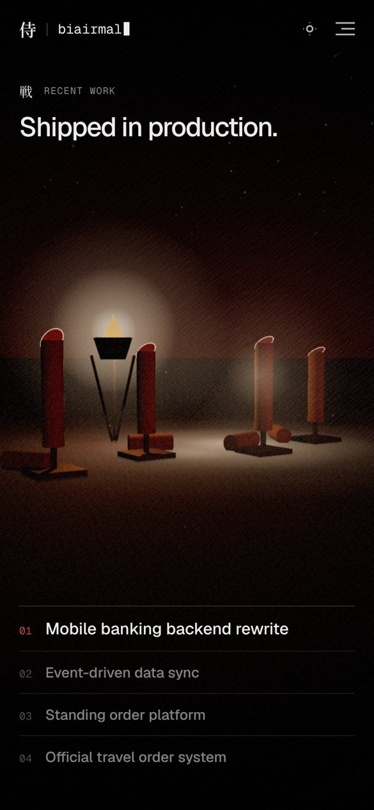
04 Work
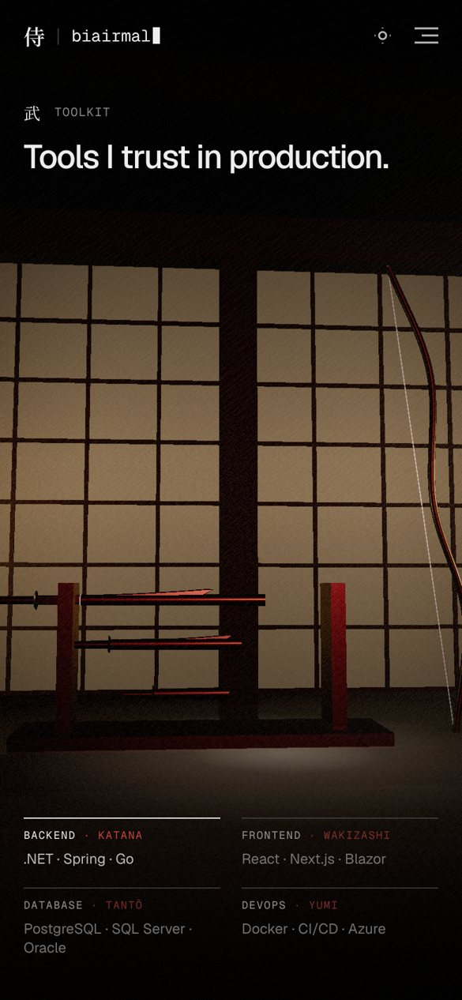
05 Toolkit
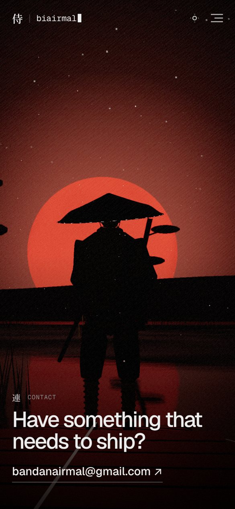
06 Contact
Each shot has its own portrait camera, with the subject in the middle band and the text in the sky or over a bottom scrim. The climax works especially well upright: his silhouette inside the moon fills the screen.
型Rules
| Topic | Rule |
|---|---|
| Samurai | He stays on his stone the whole film, facing the moon. Two clips only: the iai (scrubbed by scroll during About) and idle. He never walks. |
| The moon | Hidden behind the camera until Contact. Before that its presence is only a faint red key light on his front and a red tint in the mist. |
| Slash effect | A ribbon swept by the katana bone over the cut frames, with additive blending and a fading tail, generated at runtime. No asset needed. |
| Parallax | Every shot has a foreground layer (reeds, a lantern, him), and every move has a sideways component. |
| Assets | Same list as v6 (storyboard-v6/ASSET_PROMPTS.txt). The only difference: the pines become a line of 8–10 along the far shore, varied in height, so generate 3–4 pine variants. The ronin’s iai clip is now required, not optional. |
侍 · biairmal storyboard v7 · real-time previz renders (design/previz/scene5.js) · placeholder geometry